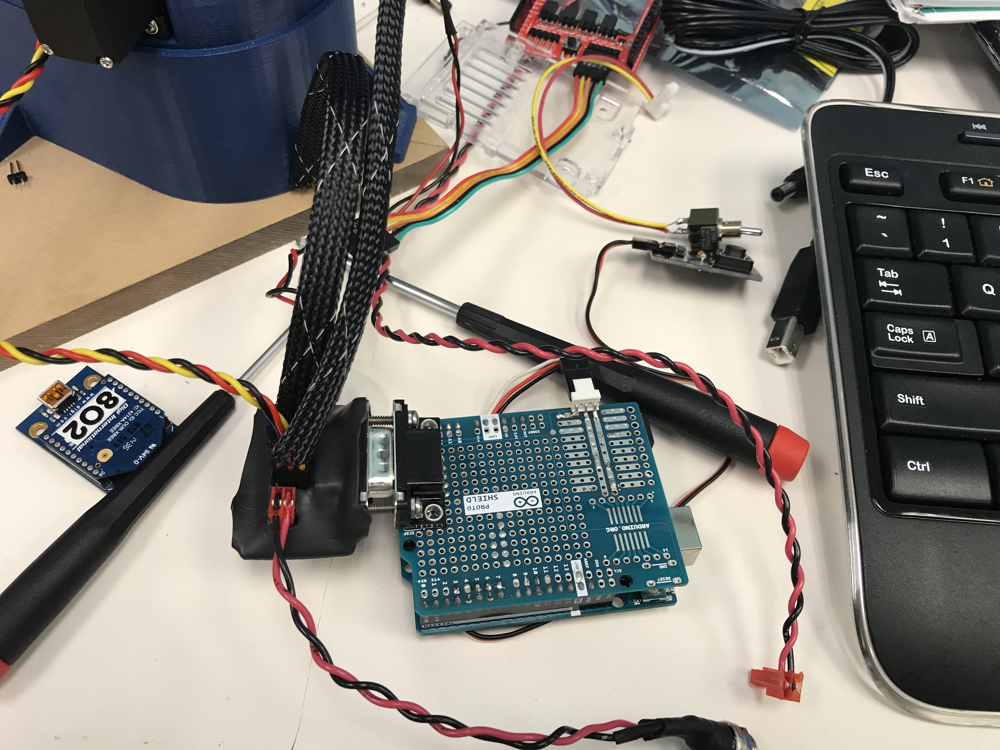

I attended my first IoT hackday in 2016, when I was just an 14 year old kid who was excited about flashing LEDs on microcontrollers. Not only was I given the opportunity to flash some lights in the student LED costume section, I also met mentors and advisors that spurred my interest and guided my future for a career in engineering.
If you are a student as I am, IoT hackday provides exposure to methods of product development used in the “real world” as well as real world applications of each discipline involved. Personally, the mentors I have met at IoT hackdays have helped me decide not only my path in higher education, but my career in industry as well.
For experienced engineers, the hackday serves as a place and time to work on that personal project that you’ve never had time to get off the ground. I can say from experience that the expertise of the hackday groups will reinvigorate your ideas and passion for your projects.
Whether you are a veteran engineer or just a curious student, there is a place in the hackday for you. Teams span disciplines, experience levels, and interests, which not only encourages new ideas, but also allows for exposure and learning from experts in many subjects. Regardless of the outcome of your IoT hackday project, I can promise it will be the most fun you’ve had while debugging your passion project.
To learn more, check out the IoT Hackday website: IoT Hackday MN website
Eventbrite page: IoT Hackday eventbrite page
